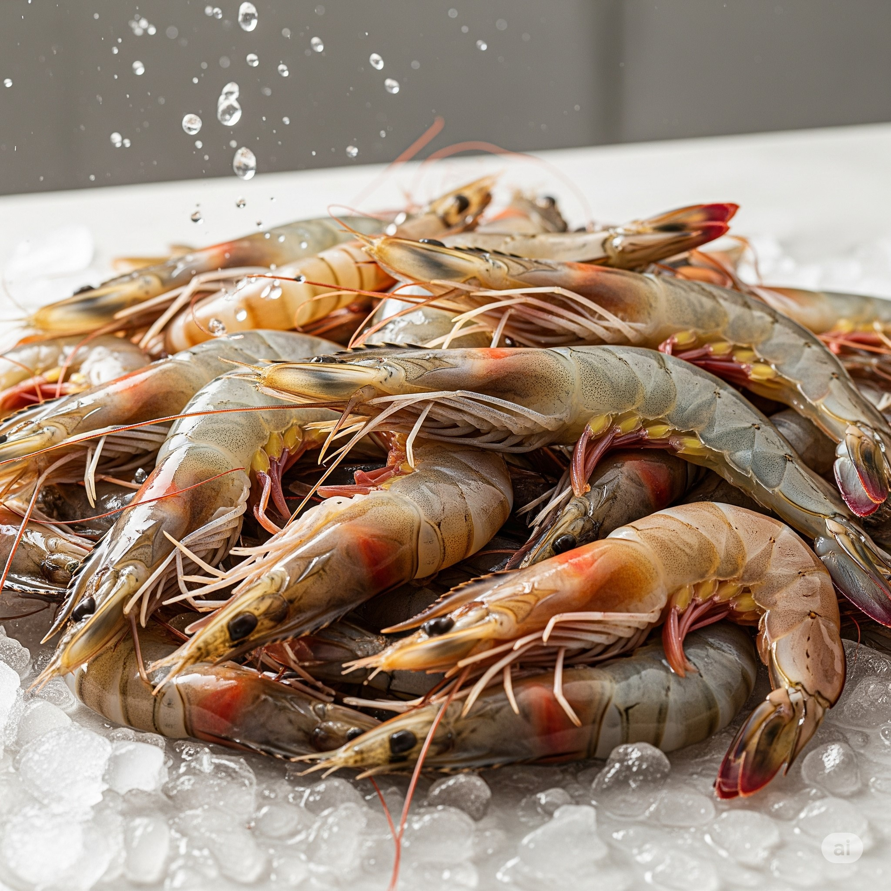
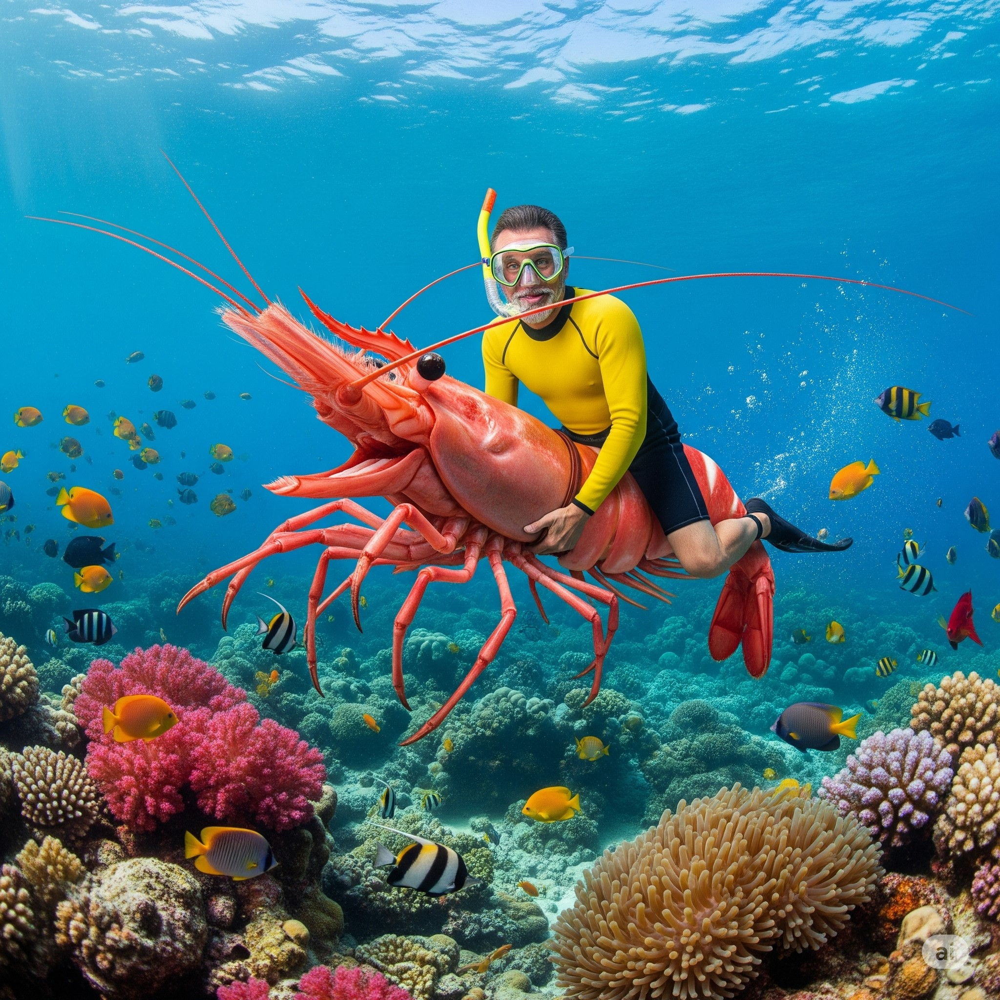
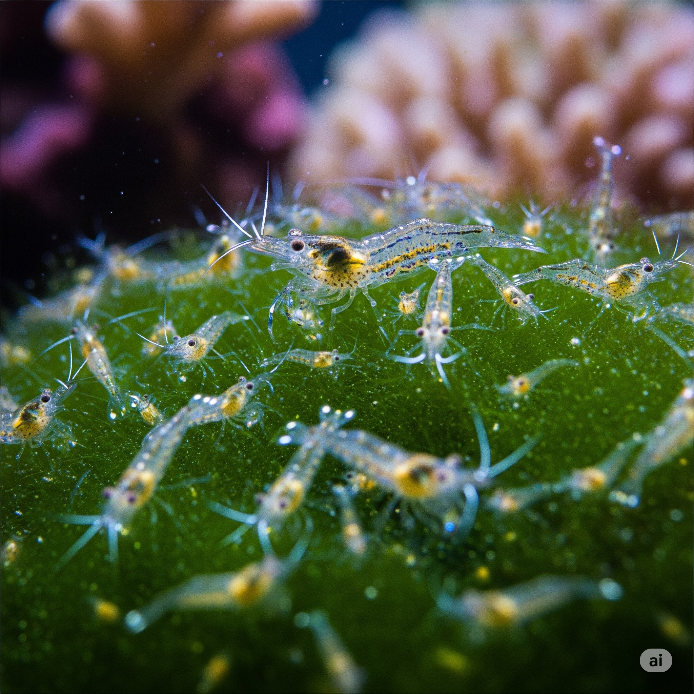

Bienvenido a nuestra tienda de camarones
Ofrecemos los camarones más frescos y de la mejor calidad, directamente del mar a su mesa.

Sobre Nosotros
Somos una empresa familiar con más de 20 años de experiencia en la cría y distribución de camarones de la más alta calidad. Nuestro compromiso es llevar a su hogar un producto fresco, delicioso y sostenible.
Nuestros camarones son criados en granjas acuícolas que cumplen con los más altos estándares ambientales y de bienestar animal. Cuidamos cada detalle del proceso, desde la siembra hasta la cosecha, para garantizar un producto excepcional.
Nuestros Productos
Camarón Jumbo
Deliciosos camarones jumbo "LOS MAS GRANDES DE LA REGION", perfectos para cualquier ocasión.
Precio: $15.00/lb
Camarón Mediano

Camarones de tamaño mediano, ideales para cócteles y ensaladas.
Precio: $12.00/lb
Camarón Pequeño

Pequeños pero sabrosos, excelentes para sopas y arroces.
Precio: $10.00/lb